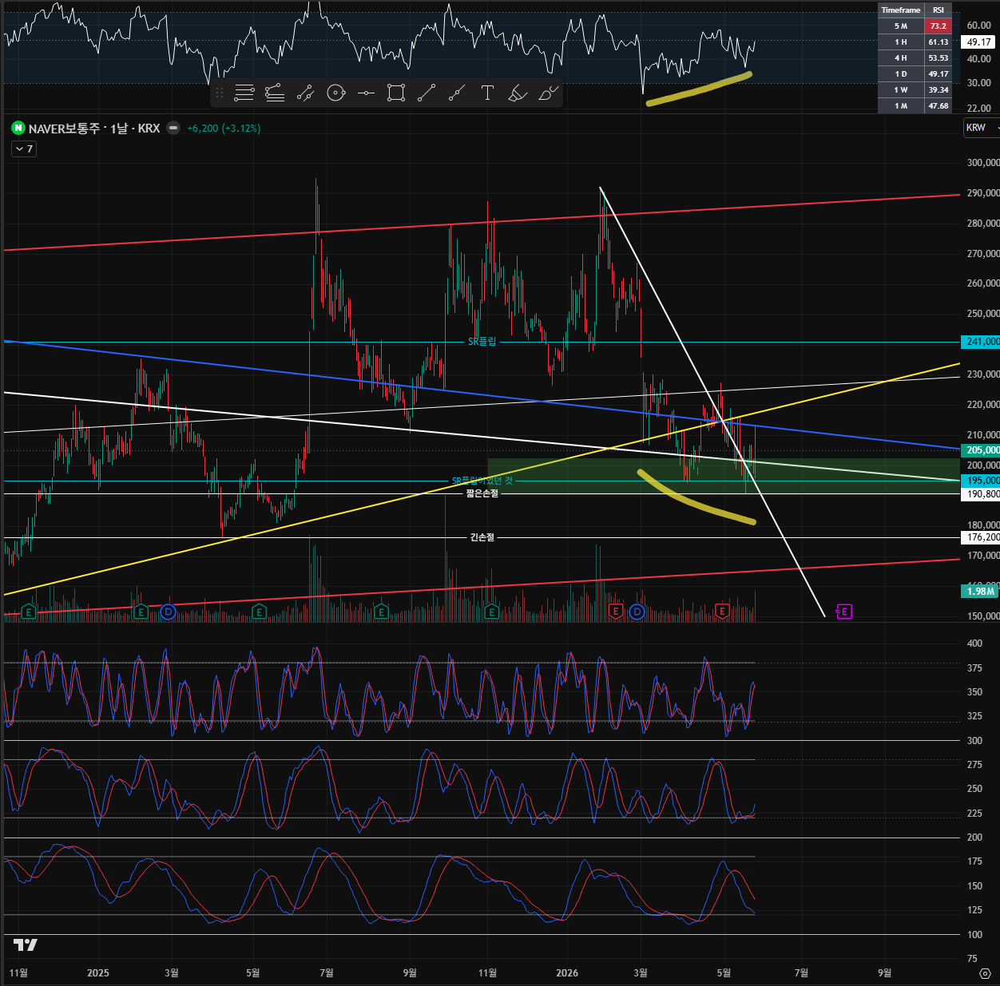
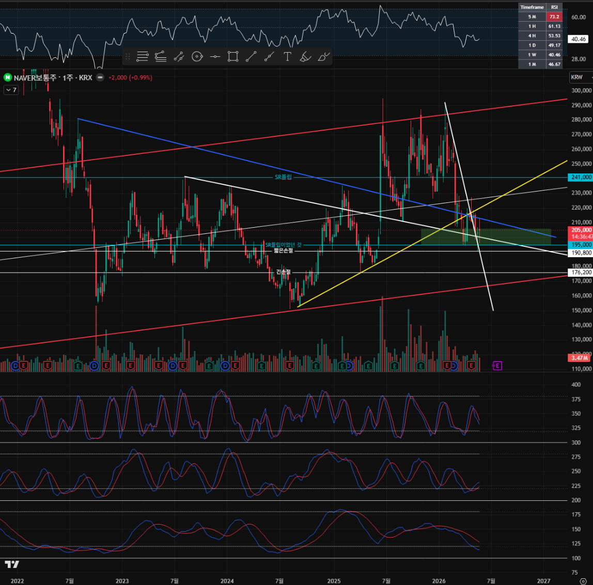
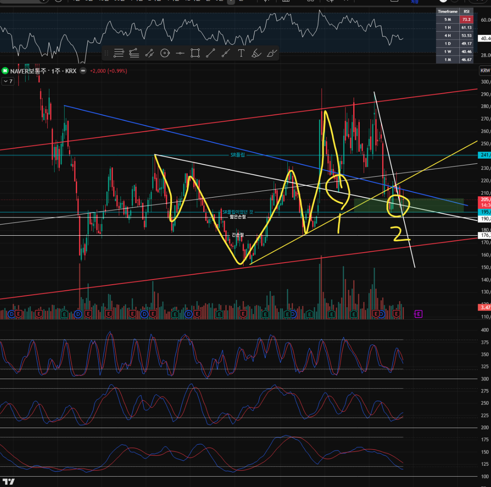
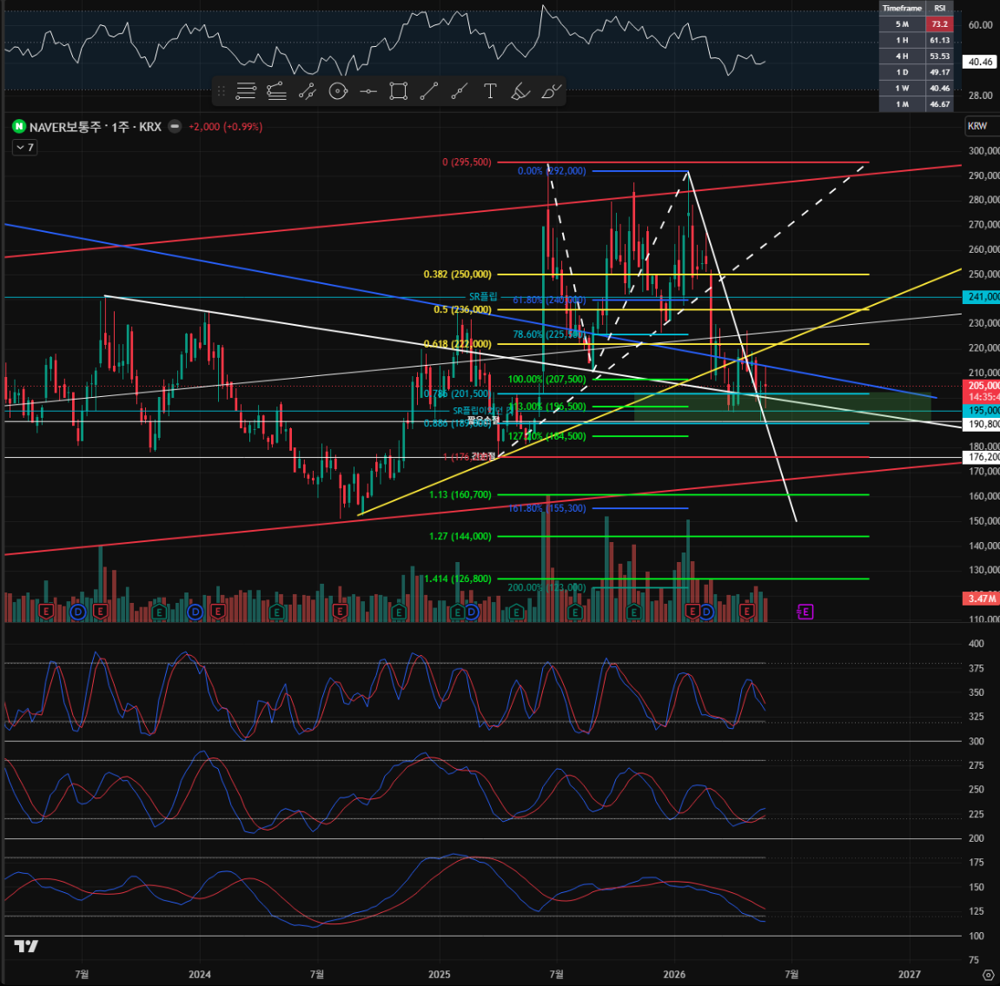
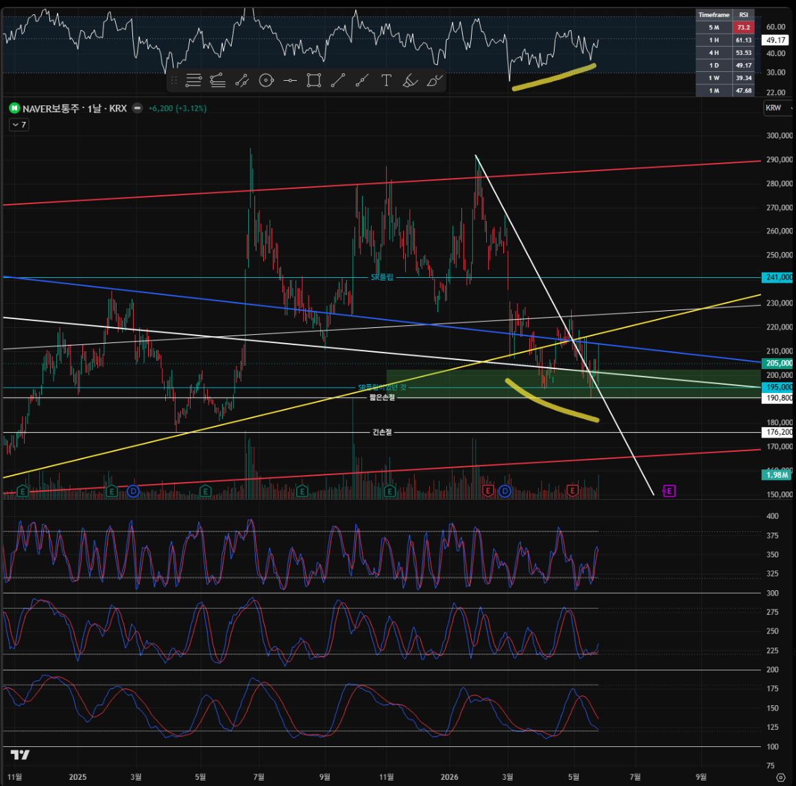
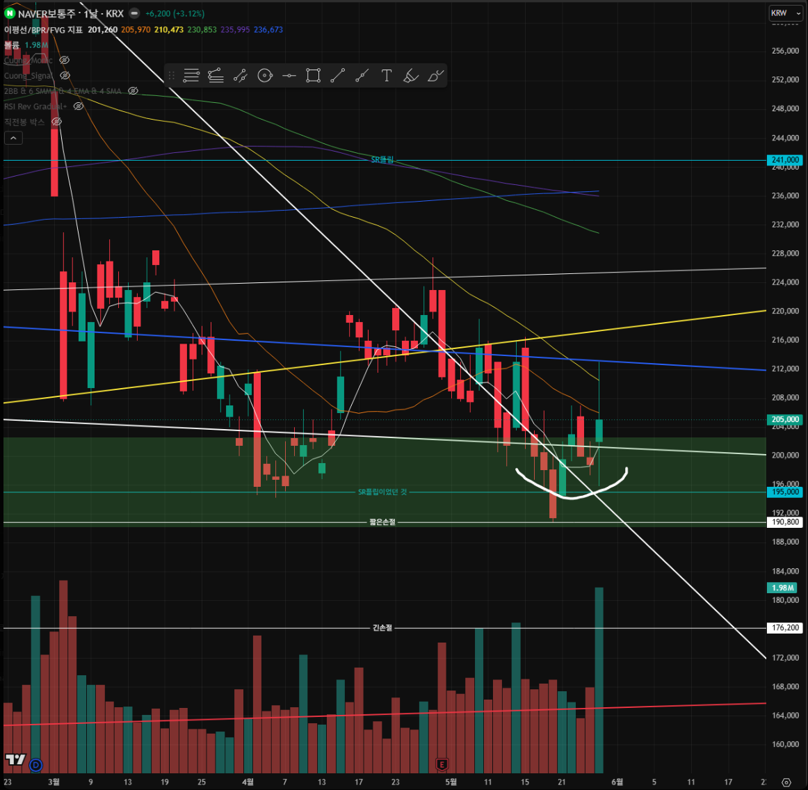
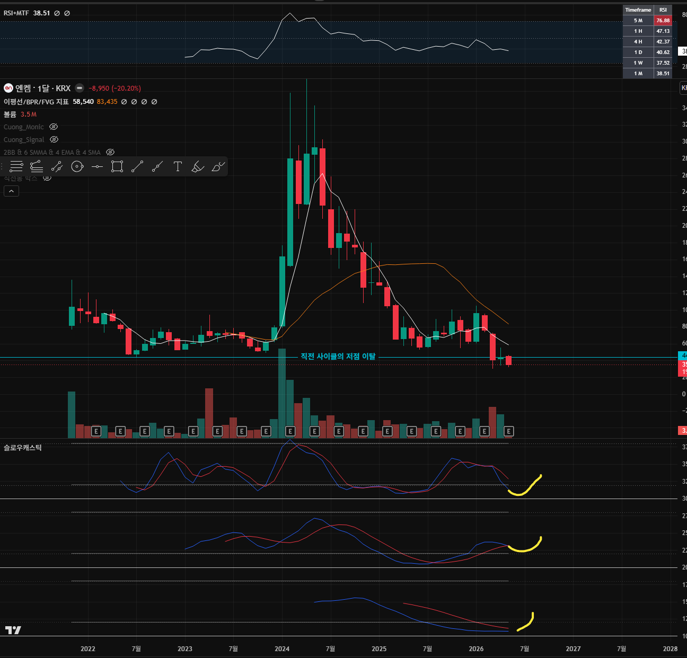
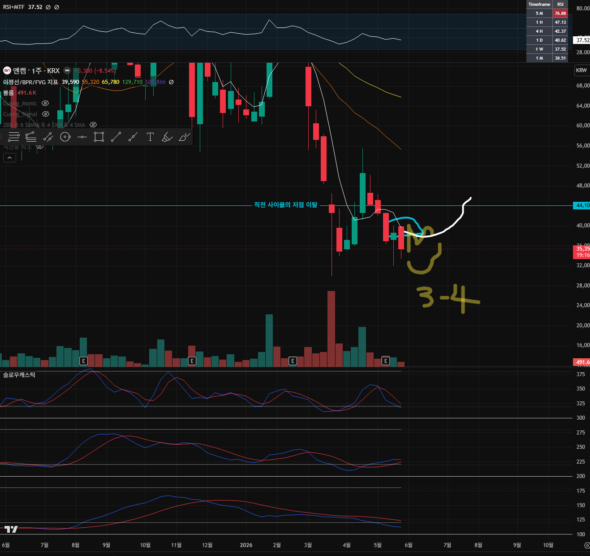
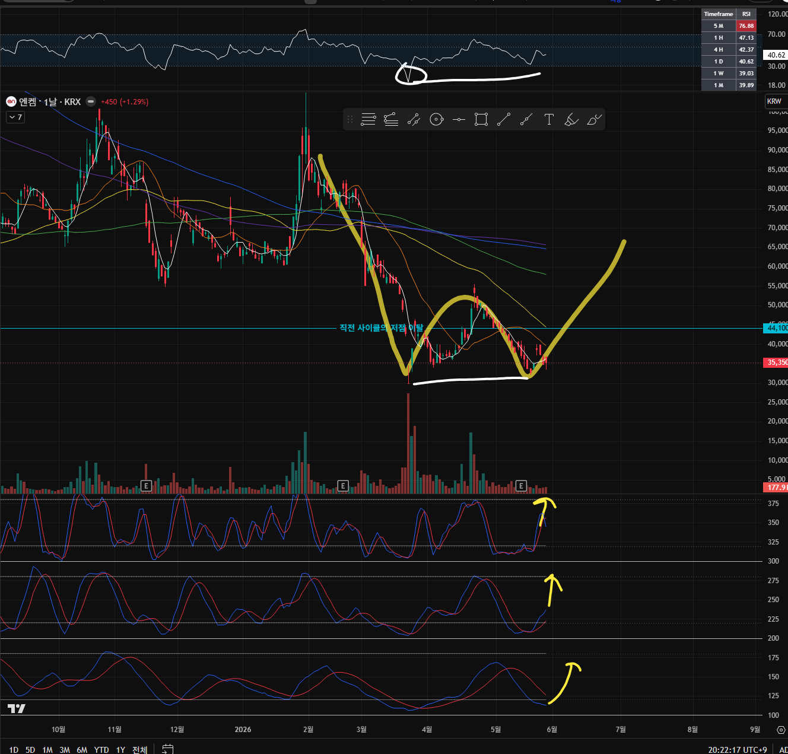
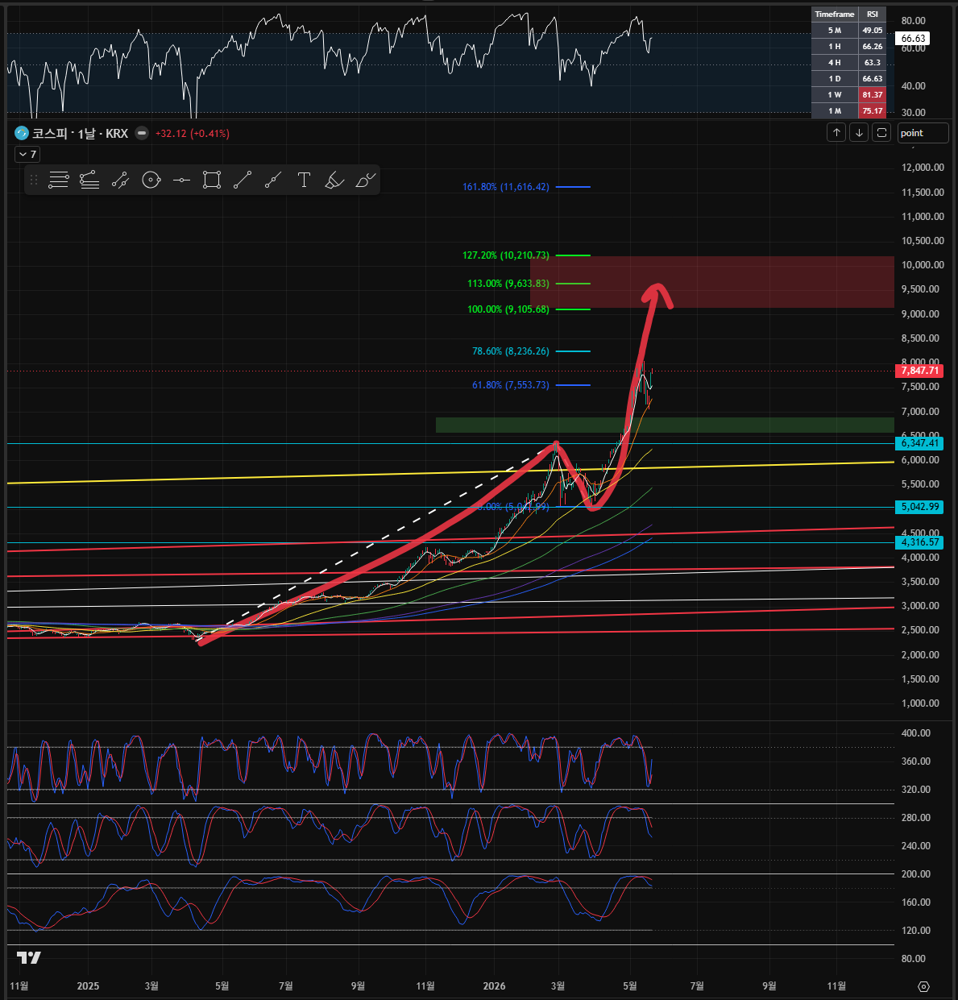

- 날짜: 2026-05-30
- 대상: 코스닥
- 시간봉 흐름: 월봉 -> 주봉 -> 일봉
- 기록 상태: 1차 분석 마감
월봉

내가 본 차트 관점
현재 코스닥은 월봉에서 양봉과 음봉을 반복하며 1,229와 1,038 사이를 약 4개월 동안 횡보하고 있다. 장기 하락추세선을 강한 양봉으로 돌파한 상태이고, 조정이 나온 것처럼 보여도 노란색의 가파른 단기 상승추세선은 아직 훼손되지 않았다.
심리적으로는 코스닥이 매우 뒤처지고 있는 것처럼 느껴질 수 있지만, 차트상으로는 1,000 위에서 횡보하며 힘을 응축하고 있다는 해석이 더 맞아 보인다. 결국 대응은 응축된 힘이 위로 갈지 아래로 갈지에 달려 있다. 투자자 입장에서는 976의 2차 지지라인이 깨지지 않는 한, 실전에서는 지속적으로 상승 관점을 유지하는 쪽이 맞다고 본다.
가장 중요한 가격대는 1,038과 976이다. 1,038과 976의 저점이 깨지지 않는 것이 핵심이다.
스토캐스틱 관점
소스토와 중스토는 아래로 꺾이면서 단기적으로는 하방을 볼 수도 있는 상황이다. 하지만 대스토는 이격이 크게 벌어진 상태다. 작은 추세는 큰 추세에 휩쓸리기도 하고, 월봉 대스토의 이격이 좁혀지는 과정에서 소스토와 중스토가 강제로 다시 위쪽으로 꺾일 수도 있다.
경험적으로 지금처럼 소스토와 중스토가 아래로 꺾였고, 대스토는 크게 벌어진 상태에서는 대스토가 이격을 줄이며 다시 대스토의 방향을 따라가는 경우가 적지 않았다. 오히려 숏 타이밍은 대스토 이격이 좁혀진 뒤에 보는 것이 확률이 더 높다고 본다.
차트에서 확인되는 사실
- 현재가는 차트와 KRX/KIND 기준으로 1,074.8 부근이다.
- 월봉 상단 저항은 1,229 부근이다.
- 1차 지지는 1,038 부근이다.
- 2차 지지는 976 부근이다.
- 코스닥은 1,038~1,229 사이에서 약 4개월째 횡보 중이다.
- 장기 하락추세선은 월봉 양봉으로 돌파한 상태다.
- 단기 급등 이후 조정이 있었지만, 노란색 단기 상승추세선은 아직 훼손되지 않았다.
- 소스토와 중스토는 단기 하방 압력을 만들 수 있는 모양이다.
- 대스토는 아직 큰 방향의 상승 에너지가 남아 있는 형태로 볼 수 있다.
Codex 검토
사용자의 핵심 관점은 조건부로 합리적이다. 월봉에서 장기 하락추세선을 돌파한 뒤 바로 무너지지 않고 1,000 위에서 횡보한다면, 이를 단순 약세보다 돌파 이후 힘을 모으는 구간으로 해석할 수 있다. 특히 976을 2차 지지로 두고 그 위에서는 상승 관점을 유지한다는 기준은 실전 대응 기준으로 명확하다.
다만 1,038은 단순 숫자 이상의 의미가 있다. 1,038을 지키는 동안에는 "상단 돌파 대기"라는 해석이 살아 있지만, 1,038을 월봉 종가로 이탈하면 1,000 위 응축이라는 표현은 약해진다. 그 경우 시장은 여전히 상승 추세 안에 있더라도, 공격적 상승 관점보다는 976 재확인 가능성을 먼저 봐야 한다.
976은 더 중요한 기준이다. 976까지는 눌림과 변동성으로 볼 여지가 있지만, 976을 월봉 종가로 깨고 회복하지 못하면 장기 하락추세선 돌파 이후의 상승 가설 자체가 훼손된다. 이때는 "코스닥이 뒤처져 보이는 심리"가 아니라 실제 차트 구조 악화로 분류해야 한다.
스토캐스틱 해석도 설득력이 있다. 소스토와 중스토의 하방 전환만 보고 바로 약세로 단정하기에는 대스토의 방향성이 아직 살아 있다. 큰 시간봉의 대스토가 강한 상태에서는 작은 스토캐스틱이 눌렸다가 다시 위로 말리는 경우가 있다. 다만 이 해석은 가격이 1,038 또는 최소 976을 지킨다는 조건이 붙는다. 가격이 지지를 깨면 보조지표 기대보다 가격 구조가 우선이다.
주봉

내가 본 차트 관점
주봉에서는 노란색 단기 상승추세선을 두 가지로 그었다. 두 추세선은 상승이 촉발된 2025년 4월 저점과, 빨간색 화살표로 표시한 두 개의 저점을 기준으로 그은 것이다. 현재 코스닥은 가파른 단기 상승추세선마저 깨지 않은 상태라 이 점은 긍정적으로 본다.
다만 부정적으로 볼 수 있는 부분도 분명하다. 주봉 스토캐스틱은 소스토, 중스토, 대스토가 모두 아래로 꺾여 있고, 월봉 대스토처럼 이격이 크게 벌어진 상태도 아니다. 아래로 박히기 시작하면 적어도 주봉 소스토와 중스토가 과매도권까지 밀릴 수 있는 위험한 형태다.
또 하나의 큰 부담은 20주선의 완전한 이탈이다. 2025년 4월 상승이 시작된 뒤 코스닥은 20주선을 건드리기는 했지만 한 번도 종가로 이탈한 적은 없었다. 반면 이번에는 20주선을 종가로 이탈했고, 이 부분은 코스닥 비관론에 힘을 실어주는 근거다. 코스피가 20주선을 터치조차 하지 않은 기간이 길었던 것과 비교하면 코스닥은 확실히 약한 모습을 보여주고 있다.
RSI도 부담이다. 주봉 3중 하락 다이버전스가 걸리면서 조정을 맞고 있는 상태다. 보통 하락 다이버전스의 최대 기대값은 해당 프레임의 과매도권까지 밀리는 것이다.
상승을 보는 이유
첫 번째는 월봉 대스토의 힘이다. 주봉 스토캐스틱 자체는 부정적이지만, 지지라인이 깨지기 전까지는 월봉 대스토의 상승 힘을 무시할 수 없다. 그래서 주봉 스토가 나쁘다는 사실은 경계하되, 1차 지지와 2차 지지가 깨지기 전에는 상승 가설을 버리기 어렵다.
두 번째는 이평선이다. 20주선을 이탈한 것은 긍정적인 상황이 아니며, 주봉 이평 위로 다시 올라서는 것을 확인하고 매수하는 것이 더 안전한 확인 매매일 수 있다. 다만 다음 주부터 다시 양봉을 띄우며 상승한다면 5주선이 고개를 돌리면서 차트에 그린 것과 같은 회복 형태가 나올 수 있다. 20주선 이탈로 트랩을 만들고 매물을 털어낸 뒤, 바로 다음 봉에서 양봉으로 이평을 다시 올라타며 이평 이탈 손절자들에게 재진입 기회를 거의 주지 않는 빠른 상승이 나오는 경우도 있다.
개인적으로 이평선만으로 매수와 매도를 결정하는 것은 선호하지 않는다. 종가 기준 이평 이탈로 매도했다면 다시 올라섰을 때 또 매수해야 하는데, 대부분의 투자자는 자신이 판 가격보다 비싸게 다시 사는 것을 불편해한다. 주봉 이평 이탈 기준은 폭도 너무 커서, 이평선 단독 매매는 지양하는 편이다.
세 번째는 RSI 하락 다이버전스다. 하락 다이버전스의 최대 기대값은 과매도권까지의 하락이 맞지만, RSI 50 부근에서 멈추는 경우도 많다. 숏 투자자라면 RSI 50에서는 반익절을 챙기는 것이 맞는 매매일 수 있다. 즉, 주봉 하락 다이버전스로 인한 하락은 이 정도에서 마무리됐을 가능성도 있다.
네 번째이자 가장 중요한 것은 다우이론이다. 현재 코스닥은 코스피에 비해 매우 부진해 실망감이 강하지만, 냉정하게 보면 저점도 올리고 고점도 올리고 있다. 실제 투자자들은 코스피와 삼성전자, 하이닉스 랠리에 박탈감을 느낄 수 있지만, 코스닥 자체 차트는 아직 저점을 깨지 않았고 고점도 조금씩 올려내고 있다. 결국 중요한 것은 2차 지지라인을 깨지 않는 것이다. 1차 지지를 깨지 않는 것이 가장 좋지만, 실전에서 가장 중요한 기준은 2차 지지라인이다.
차트에서 확인되는 사실
- 주봉 현재가는 1,074.8 부근이다.
- 상단의 중요한 저항은 1,229 부근이다.
- 1차 지지는 1,038 부근이다.
- 2차 지지는 976 부근이다.
- 2025년 4월 저점 이후의 노란색 단기 상승추세선은 아직 훼손되지 않았다.
- 더 가파른 단기 상승추세선도 아직 완전히 깨지지 않은 상태로 해석된다.
- 장기 하락추세선 돌파 이후 가격은 1,000 위에서 버티고 있다.
- 주봉 소스토, 중스토, 대스토는 모두 아래로 꺾인 상태다.
- 주봉 20주선은 종가 기준으로 이탈한 상태다.
- 주봉 RSI는 3중 하락 다이버전스 이후 50 부근까지 내려온 상태로 보인다.
- 다우이론 관점에서는 저점과 고점이 아직 높아지는 구조가 유지되고 있다.
Codex 검토
주봉은 월봉보다 경고 신호가 뚜렷하다. 주봉 스토캐스틱 세 줄이 모두 아래로 꺾였고, 월봉 대스토처럼 이격 여유가 있는 상태도 아니라면 단기 조정이 더 깊어질 수 있다. 20주선 종가 이탈도 가볍게 보면 안 된다. 2025년 4월 이후 처음으로 20주선 이탈이 명확해졌다면, 시장 참여자들이 코스닥을 약하게 보는 근거가 생겼다고 보는 것이 맞다.
그럼에도 사용자의 상승 관점은 아직 폐기할 단계가 아니다. 이유는 가격 구조 때문이다. 주봉에서 가장 중요한 것은 스토캐스틱이 아니라 1,038과 976이다. 1,038 위에서 빠르게 회복하면 20주선 이탈은 트랩 또는 과열 해소로 해석될 여지가 있고, 976 위에서 저점이 유지되면 다우이론상 상승 구조는 아직 살아 있다.
RSI 하락 다이버전스 해석도 균형이 필요하다. 하락 다이버전스의 최대 기대값은 과매도권까지의 하락이지만, 실제 지수에서는 RSI 50 부근에서 조정이 끝나는 경우도 많다. 따라서 RSI 50 도달은 하락 지속의 근거이기도 하지만, 숏 포지션의 일부 청산이 나올 수 있는 반등 후보 구간이기도 하다.
다만 한 가지는 분명하다. 주봉은 월봉보다 훨씬 더 엄격하게 봐야 한다. 1,038이 깨지면 단기 강세 해석은 약해지고, 976이 깨지면 "저점과 고점을 올린다"는 다우이론 근거까지 흔들린다. 이 경우에는 월봉 대스토 기대보다 주봉 가격 훼손을 먼저 인정해야 한다.
일봉

내가 본 차트 관점
일봉 스토캐스틱은 그래도 괜찮은 형태다. 소스토가 고개만 돌려내면 대스토도 돌아나갈 수 있고, 중스토는 이미 돌린 상황으로 보인다.
1차 지지와 2차 지지가 중요하다는 점을 계속 언급했는데, 현재 이 구간에서 약 3번 정도 지지를 쓴 상황이다. 그래서 명확한 것은 976이 뚫리면 그냥 틀렸음을 쿨하게 인정하면 되는 차트라는 점이다. 그전까지는 상승을 보는 것이 유리하다.
또한 아래도 3번이지만, 만약 상승에 성공하면 위도 3번이다. 중요한 저항으로 표시한 1,229를 넘어설 때가 핵심이다. 보통 저 구간을 넘어서게 되면 어지간한 코스닥 종목 보유자들도 본전 또는 수익권일 가능성이 높다.
길게 보유한 사람은 2026년 1월부터 이어진 답답한 박스권을 견디면서 코스피 독주를 바라봤을 것이다. 그러면 대부분의 사람들은 1,230을 넘어갈 때 다시 떨어질 것을 상상하며 매도해 수익을 챙기고, 버틴 자신을 칭찬하며 안도할 가능성이 크다. 그런데 바로 이런 심리가 코스닥이 1,230을 뚫는다면 오히려 강하게 홀딩할 근거라고 본다. 많은 사람들이 매도할 때 오히려 더 강력하게 홀딩하는 것이다. 돌파 후 흔들기가 나올 수는 있지만, 넘어만 선다면 팔 이유가 없다.
차트에서 확인되는 사실
- 일봉 현재가는 1,074.8 부근이다.
- 1차 지지 1,038 부근에서 여러 차례 지지 시도가 있었다.
- 2차 지지 976 부근은 상승 관점의 최종 방어선이다.
- 아래쪽 지지 확인은 약 3번 발생한 것으로 볼 수 있다.
- 위쪽 저항 1,229 부근도 이미 여러 차례 막힌 자리다.
- 일봉 중스토는 이미 돌리는 모습이고, 소스토가 위로 꺾이면 대스토까지 반등할 가능성이 생긴다.
- 가격은 노란색 상승 채널 안쪽에서 지지 확인을 시도하고 있다.
- 1,229 돌파 시 2026년 박스권 상단 돌파 의미가 생긴다.
Codex 검토
일봉은 주봉보다 긍정적이다. 주봉은 스토캐스틱, 20주선, RSI 다이버전스가 모두 부담이지만, 일봉은 지지선 근처에서 스토캐스틱이 다시 돌 수 있는 구조를 만들고 있다. 특히 중스토가 이미 방향을 돌렸고 소스토만 다시 위로 꺾이면, 단기 반등 시나리오는 충분히 살아난다.
다만 1차 지지와 2차 지지를 여러 번 썼다는 점은 양면적이다. 세 번 지지받았다는 것은 그 가격대가 의미 있다는 뜻이지만, 동시에 반복 테스트가 많아질수록 깨질 때 충격이 커질 수 있다는 뜻이기도 하다. 그래서 사용자가 말한 것처럼 976 이탈 시에는 쿨하게 틀렸음을 인정하는 기준이 필요하다. 976이 깨지면 상승 관점의 가장 깔끔한 근거인 "저점을 올리고 있다"는 구조가 훼손된다.
1,229 돌파 해석은 매우 중요하다. 1,229는 단순 저항이 아니라 2026년 박스권을 견딘 보유자들의 심리가 걸린 자리다. 이 구간에서 본전 매도, 수익 실현, 안도 매물이 나오는 것은 자연스럽다. 그런데 그 매물을 받아내고 1,229 위에 안착한다면, 오히려 공급을 흡수한 강한 신호로 볼 수 있다.
따라서 1,229 근처에서는 기계적 익절보다 "돌파 실패인지, 돌파 후 매물 소화인지"를 구분해야 한다. 윗꼬리만 남기고 다시 박스 안으로 들어오면 익절/방어가 맞지만, 1,229 위에서 종가를 만들고 흔들기 이후에도 지키면 팔 이유가 줄어든다. 그때는 보유자들의 안도 매도가 오히려 다음 상승의 연료가 될 수 있다.
Codex 최종 의견
현재 코스닥은 월봉만 보면 "상승 추세 훼손"보다는 "상승 이후 고점권 박스 응축"에 가깝다. 주봉까지 내려오면 경고 신호가 분명하지만, 일봉은 지지선 근처에서 다시 돌릴 수 있는 구조를 만들고 있다. 주봉 스토캐스틱 세 줄 하락, 20주선 종가 이탈, RSI 3중 하락 다이버전스는 모두 위험 신호지만, 1,038과 976이 살아 있는 동안에는 상승 가설을 폐기할 단계가 아니다.
최종 뷰는 976 방어 전제의 상승 우위다. 이유는 가격 구조가 완전히 깨지지 않았기 때문이다. 1,038 위에서는 상단 1,229 돌파 대기 관점이 유효하고, 976 위에서는 큰 상승 가설을 유지할 수 있다. 다만 지금은 "강한 상승 확정"이 아니라 "위험 신호가 큰데도 지지선이 살아 있는 상승 우위"로 보는 것이 맞다.
실전 대응은 단순하다. 1,038 위로 빠르게 회복하거나 1,038을 지켜내면 코스닥은 다시 상단 돌파 시나리오를 볼 수 있다. 1,038을 이탈해도 976 위에서 반등하면 상승 가설은 유지된다. 그러나 976을 깨면 월봉과 주봉, 일봉의 긍정 해석을 모두 낮춰야 한다.
반대로 1,229를 돌파하고 안착하면 이야기가 달라진다. 그 구간은 본전 매도와 수익 실현 매물이 많이 나올 수 있는 자리인데, 그 매물을 받아내고 버티면 박스권 상단 돌파가 확인된다. 이 경우에는 흔들기가 나오더라도 단순히 "많이 올랐다"는 이유로 파는 구간이 아니라, 강한 홀딩을 검토할 수 있는 구간이다.
현재 판단
- 시장 상태: A~B
- 판단: 월봉 응축과 일봉 지지 반등 가능성은 유효하지만, 주봉 경고 신호가 커진 상승 검증 구간
- 강세 유지선: 1,038
- 상승 가설 방어선: 976
- 상단 확인선: 1,229
- 대응: 포지션 정보가 없으므로 액션 선택 없음. 시장 뷰는 976 방어 전제의 상승 우위, 주봉 추가 하락 경계
다음 대응
1,038 위에서 버티거나 빠르게 회복하면 코스닥은 아직 상단 돌파를 준비하는 구간으로 본다. 1,038을 이탈하더라도 976 위에서 반등하면 큰 상승 관점은 유지할 수 있다. 1,229를 돌파하고 안착하면 응축 이후 상방 확장으로 판단한다.
반대로 1,038을 이탈하고 976까지 빠르게 밀리면, "힘을 모으는 횡보"에서 "상승 추세 검증"으로 관점을 낮춰야 한다. 976까지 깨지면 상승 가설은 방어가 아니라 재검토 대상이다. 주봉 스토캐스틱이 과매도권까지 내려가는 시나리오도 이때는 열어둬야 한다.
1,229를 돌파하면 단순 익절보다 안착 여부를 먼저 본다. 돌파 후 바로 박스 안으로 밀리면 실패로 보고 방어적 판단을 한다. 하지만 1,229 위에서 종가를 만들고, 이후 흔들기에서도 1,229를 지지로 바꾸면 강한 보유 근거가 생긴다.
행동 가드레일
- 코스닥이 뒤처져 보인다는 심리만으로 약세를 단정하지 않는다.
- 1,038 위에서는 하방 공포보다 박스 응축 가능성을 우선 본다.
- 소스토와 중스토 하락만 보고 바로 숏 관점으로 기울지 않는다.
- 다만 1,038 이탈 시에는 976 방어 여부를 먼저 확인하고, 976 이탈 시에는 상승 가설을 고집하지 않는다.
- 상단 1,229 근처에서는 돌파 확인 없이 추격 강도를 높이지 않는다.
- 1,229 돌파 시 본전 매도 심리에 휩쓸려 기계적으로 팔지 않고, 안착 여부를 먼저 확인한다.
- 1,229 위 안착이 확인되면 흔들기와 돌파 실패를 구분한다.
- 20주선 이탈만으로 매도했다면, 다시 20주선 위로 올라설 때 재매수 기준도 미리 정해둔다.
- 주봉 이평선만으로 판단하지 않고, 1,038과 976 가격 기준을 우선한다.
확인 조건
- 1,038 위 주봉/월봉 종가 유지 또는 빠른 회복
- 976 훼손 없이 재반등
- 일봉 소스토 상방 전환
- 일봉 중스토 상방 유지
- 일봉 대스토 반등 전환
- 주봉 20주선 재탈환
- 주봉 RSI 50 부근에서 반등
- 주봉 소스토와 중스토 하락 둔화 후 재상승
- 소스토와 중스토가 다시 상방으로 말림
- 대스토 이격 축소 이후 재상승 유지
- 1,229 돌파와 주봉/월봉 안착
- 1,229 돌파 후 흔들기에서 저항이 지지로 바뀌는 흐름
무효화 조건
- 1,038 주봉/월봉 종가 이탈 후 빠른 회복 실패
- 976 주봉/월봉 종가 이탈
- 976 일봉 이탈 후 빠른 회복 실패
- 장기 하락추세선 돌파 구간 아래로 재진입
- 단기 상승추세선 이탈 후 반등 실패
- 일봉 소스토 반등 실패와 중스토 재하락
- 대스토 이격 축소가 상승 재개가 아니라 하방 크로스로 이어지는 흐름
- 주봉 소스토와 중스토가 과매도권까지 밀리는데도 가격 반등이 나오지 않는 흐름
- 1,229 돌파 시도 후 강한 윗꼬리와 함께 박스 안으로 재진입하는 흐름
나중에 확인할 것
- 1,038 지지선이 실제로 월봉 종가에서 유지되는지
- 976까지 눌릴 경우 반등이 나오는지
- 1,229 돌파 시 거래대금과 코스닥 종목 breadth가 같이 개선되는지
- 소스토와 중스토가 대스토 방향을 따라 다시 위로 꺾이는지
- 일봉 소스토가 실제로 위로 고개를 돌리는지
- 1,229 돌파 시 본전 매도 물량을 흡수하고 안착하는지
- 주봉 20주선을 빠르게 회복하는지
- 주봉 RSI 50 부근에서 하락이 멈추는지
- 다우이론상 저점 상승 구조가 976 위에서 유지되는지
마감 요약
- 2026-05-30에
코스닥 끝 신호로 코스닥 월봉/주봉/일봉 1차 분석을 마감한다.
- 최종 뷰는 976 방어 전제의 상승 우위다.
- 월봉은 1,000 위 박스 응축, 주봉은 20주선 이탈과 스토캐스틱 하락 경고, 일봉은 지지선 근처 반등 가능성으로 정리한다.
- 핵심 방어선은 976이고, 이탈 시에는 상승 가설이 틀렸음을 빠르게 인정한다.
- 1,229 돌파 후 안착하면 본전 매도/안도 매물을 흡수한 신호로 보고, 단순 익절보다 강한 보유 근거로 본다.
결과 및 복기
- 날짜: 2026-05-28
- 대상: NAVER보통주
- 시간봉 흐름: 월봉 -> 주봉 -> 일봉
내 최종 판단
네이버는 달봉만 보면 썩 좋은 상황은 아니다. 달봉 소/중/대스토가 모두 바닥권일 필요는 없고, 달봉 소스토만 바닥권이어도 좋은 타점이 될 수 있다. 하지만 현재 달봉에서는 241,000원 부근 SR플립을 한 번 넘어섰다가 지지받지 못하고 내려왔고, 노란색 단기 상승추세선도 깨졌다.
다만 주봉과 일봉으로 내려오면 이야기가 달라진다. 주봉에서는 195,000원 부근 하단 수평지지, 흰색 하락 관통추세선, 파란색 관통추세선, 피보나치 0.786~0.886 / 1.13~1.414 중첩 구간이 같은 자리에서 겹친다. 일봉에서는 RSI 상승 다이버전스, 단기 하락추세선 돌파 시도, 소스토 쌍바닥 반등, 5이평을 둥글게 말아 올라탄 모습까지 보인다. 그래서 지금 네이버는 오를 근거가 생긴 차트이고, 여기서 더 빠지면 차트가 이상해지면서 아래로 미끄러질 수 있는 구간이라고 본다.
Codex 최종 의견
네이버는 현재 "매수 확정"보다 "반등 검증"에 가까운 차트다. 달봉은 SR플립 실패와 단기 상승추세선 이탈 때문에 약하지만, 주봉과 일봉에서는 반등 후보 근거가 꽤 모여 있다. 핵심 가격대는 195,000~205,000원이다. 이 구간을 지키고 205,000원 위로 안착하면 사용자 관점은 힘을 얻는다. 반대로 195,000원과 짧은 손절선인 190,800원을 이탈하면, 지금 겹쳐 있는 피보나치/관통추세선/수평지지 근거가 동시에 약해진다.
포지션 정보가 제공되지 않았으므로 액션은 선택하지 않는다. 현재 판단은 조건부 반등 후보이며, 확인 전에는 공격적 판단보다 195,000원 방어와 205,000원 위 안착을 먼저 봐야 한다.
월봉

내 의견
달봉 스토는 솔직히 볼 게 별로 없다. 달봉 소스토가 바닥권이라고 해서 못 사는 것은 아니다. 달봉 소/중/대스토가 모두 바닥권인 것은 필수요건이 아니고, 그 조건을 모두 충족하는 종목만 사려고 하면 살 수 있는 종목이 거의 없다. 달봉 소스토만 바닥이어도 사실 좋은 타점이 될 확률은 꽤 있다.
다만 현재 네이버 달봉은 SR플립을 한 번 넘어섰다가 지지받지 못하고 내려왔다. 거기에 노란색 단기 상승추세선도 깨진 상황이라 달봉만 보면 썩 좋은 상황은 아니다.
Codex 의견
달봉 소/중/대스토 바닥권을 필수조건으로 보지 않는 관점은 합리적이다. 큰 시간봉 보조지표 조건을 과하게 빡빡하게 잡으면 실제 매수 후보가 거의 사라진다. 하지만 이번 네이버 월봉은 보조지표보다 가격 구조가 더 중요하다. 241,000원 부근 SR플립을 지키지 못했고, 단기 상승추세선도 이탈했다면 월봉만으로 강한 매수 근거를 만들기는 어렵다.
월봉은 상승 확정이 아니라 상단 회복 실패 이후 재지지 확인 구간으로 봐야 한다. 달봉 소스토 바닥권은 보조 긍정 요인이지만, 241,000원 회복 전까지는 월봉 구조가 좋다고 보기는 어렵다.
확인 / 무효화
확인 조건은 195,000원 부근 하단 지지 유지, 220,000원대 회복, 241,000원 SR플립 재탈환과 월봉 안착이다. 무효화 조건은 195,000원 이탈, 이탈 후 195,000원이 저항으로 바뀌는 흐름, 장기 채널 하단으로 재하락하는 흐름이다.
주봉
1. SR플립 하단 지지와 관통추세선

주봉은 이평선 의미가 약해 보여서 껐다. 우선 과거 SR플립이었던 아래 수평선이 은근히 지지저항 역할을 하고 있다. 노란색 단기 상승추세선이 깨진 것은 아쉽지만, 하얀색 하락추세선을 어떻게든 지지로 쓰려는 모습이 보인다.
2. 역헤드앤숄더 넥라인 리테스트

노란선보다 흰색선이 더 의미 있다고 보는 이유는 역헤드앤숄더 패턴 상승 이후 넥라인 리테스트가 일어난 관통추세선이기 때문이다. 다만 파란색 관통추세선도 찾을 수 있고, 지금은 SR플립이었던 하단 수평지지와 두 개의 대각선 사이에 캔들이 끼어 있는 형국이다.
3. 피보나치 중첩 구간

여기에 피보나치 근거도 있다. 나는 피보나치의 0.786~0.886 / 1.13~1.414 구간을 중요하게 보는데, 이 두 구간이 겹치는 영역이 초록색 박스다. 이 부분이 마침 하단 수평지지와 관통추세선 두 개가 끼어 있는 곳이다. 주봉 스토는 형태가 괜찮고, 소스토가 여기서 돌려나가면 된다. RSI는 큰 의미가 없다.
Codex 의견
주봉 관점은 달봉보다 훨씬 설득력이 있다. 195,000원 부근 하단 수평지지, 흰색 관통추세선, 파란색 관통추세선, 피보나치 중첩 구간이 같은 가격대에 모여 있다면 단순한 한 줄 지지보다 의미가 크다. 특히 흰색 관통추세선을 역헤드앤숄더 상승 이후 넥라인 리테스트로 해석하는 것은 조건부로 타당하다.
다만 관통추세선은 해석 여지가 크다. 실제 지지선으로 인정하려면 가격이 195,000원 부근을 지키고, 다시 205,000~210,000원 위로 올라서는 확인이 필요하다. 지금은 지지가 확정된 것이 아니라 지지 후보 구간에 들어온 상태다.
확인 / 무효화
확인 조건은 195,000원 부근 주봉 종가 방어, 205,000~210,000원 회복, 주봉 소스토 상방 전환, 이후 220,000원대 회복이다. 강한 확인은 241,000원 재돌파와 안착이다.
무효화 조건은 195,000원 주봉 종가 이탈, 이탈 후 195,000원 저항 전환, 주봉 소스토 반등 실패, 180,000원대 하단 지지 테스트로 밀리는 흐름이다.
일봉
1. RSI 상승 다이버전스, 하락추세선, 스토캐스틱

이 차트는 지금 더 빠지면 이상해지는 차트다. 떨어질 경우 쭉쭉 미끄러질 수도 있는데 이유는 네 가지다.
첫 번째는 RSI다. 일봉상 상승 다이버전스가 3번에 걸쳐 걸린 상황이다. 상승장이니 일봉 상승 다이버전스도 귀한데, 일봉 상승 다이버전스가 3중으로 걸렸다. 3중으로 걸렸다고 더 강한 것은 아니지만, 하락 모멘텀이 둔화되는 신호로 볼 수 있다.
두 번째는 일봉상 단기 하락추세선을 어떻게든 빗겨내고 있다는 점이다.
세 번째는 스토캐스틱이다. 소스토, 중스토, 대스토를 보면 중스토와 대스토는 쌍바닥을 만드는 과정이고, 소스토는 이미 쌍바닥을 만들며 올라가고 있다. 그런데 여기서 하락으로 꺾이면 중스토와 대스토도 위로 고개를 돌리기 어렵다. 소스토가 위로 쫙 뻗어줘야 중스토와 대스토도 위로 고개를 돌리면서 상승하기 용이해 보인다.
2. 5이평 말림과 재안착

네 번째는 이평선이다. 엔켐 주봉에서 설명한 5이평이 둥글게 말리는 형태가 네이버 일봉에서 보인다. 지금 5이평을 둥글게 말면서 올라탄 상태인데, 이걸 굳이 또 이탈한다면 오를 놈의 차트라고 보기 어렵다.
Codex 의견
일봉은 네이버 분석에서 가장 직접적인 실행 시간봉이다. RSI 상승 다이버전스, 단기 하락추세선 돌파 시도, 소스토 선행 반등, 5이평 말림이 한꺼번에 보인다면 반등 근거는 충분히 있다. 다만 이 근거들은 모두 "여기서 더 안 빠져야 한다"는 조건이 붙는다.
그래서 지금 일봉은 예쁘게 말하면 압축된 반등 대기 구간이고, 냉정하게 말하면 못 오르면 미끄러질 수 있는 자리다. 205,000원 위로 안착하고 5이평을 유지하면 반등 시나리오가 살아난다. 반대로 195,000원과 190,800원 짧은 손절선을 다시 깨면 일봉 반등 가설은 훼손된다.
확인 / 무효화
확인 조건은 205,000원 위 재안착, 5이평 유지, 단기 하락추세선 위 종가 유지, 소스토 상방 확장, 이후 210,000~220,000원 회복이다.
무효화 조건은 195,000원 이탈, 190,800원 짧은 손절선 이탈, 소스토 재하락, 5이평 재이탈 후 회복 실패다. 깊은 무효화는 176,200원 긴 손절선 부근까지 밀리는 흐름이다.
종합 판단
네이버는 달봉만 보면 아직 약하다. 하지만 주봉에서는 지지 후보가 여러 개 겹쳐 있고, 일봉에서는 반등해야 할 근거가 많이 모였다. 따라서 현재 네이버는 "좋은 차트"라기보다 "여기서 좋아져야 하는 차트"다.
핵심 가격대는 195,000~205,000원이다. 195,000원을 지키고 205,000원 위로 올라서면 주봉 지지와 일봉 반등이 연결된다. 205,000~210,000원을 회복하면 단기 반등 관점은 유지할 수 있고, 220,000원대 회복부터는 주봉 회복 가능성이 커진다. 241,000원 재탈환은 월봉까지 포함한 구조 회복 신호다.
반대로 여기서 195,000원을 깨고 190,800원까지 이탈하면, 사용자가 말한 것처럼 더 빠지면 이상해지는 차트가 실제로 아래로 미끄러지는 차트로 바뀐다.
현재 판단
- 포지션 정보: 제공되지 않음
- 액션: 판단 보류
- 차트 뷰: 조건부 반등 후보
- 핵심 지지: 195,000원 / 190,800원
- 핵심 회복: 205,000~210,000원
- 강한 회복: 220,000원대 회복 후 241,000원 재탈환
다음 대응
195,000원 지지 여부와 205,000원 위 안착을 먼저 본다. 205,000원 위에서 5이평을 유지하고 소스토가 확장되면 반등 시나리오를 유지한다. 210,000~220,000원 회복 여부를 다음 관찰 구간으로 두고, 241,000원은 월봉 구조 회복을 확인하는 핵심 가격으로 둔다.
행동 가드레일
달봉 소스토 바닥권만 보고 성급하게 확정 판단하지 않는다. 주봉의 관통추세선과 피보나치 중첩은 의미 있지만, 195,000원 이탈 시에는 근거가 동시에 약해진다는 점을 기억한다. 일봉에서 근거가 많이 모인 만큼, 여기서 빠질 때는 "조금만 더 보자"보다 무효화 조건을 먼저 적용한다.
결과 및 복기
2026-05-28에 네이버 분석 끝 신호로 네이버 월봉/주봉/일봉 1차 분석을 마감한다. 이후에는 195,000원 방어, 205,000원 위 안착, 소스토 확장, 220,000원대 회복 여부를 확인한다.
- 날짜: 2026-05-28
- 대상: 엔켐
- 시간봉 흐름: 월봉 -> 주봉 -> 일봉
내 최종 판단
엔켐은 월봉과 주봉으로 보면 큰 시간봉 과매도권이 동시에 보이는 종목이고, 장기 반전 후보로서의 잠재력은 분명히 있다. 하지만 주봉에서는 5이평 저항을 강하게 맞고 있고, 일봉에서는 진입 근거였던 5일선 회복 흐름이 깨졌다. 결국 장기 잠재력은 인정하지만, 현재 강세장에서 2차전지 주변 섹터의 약한 종목을 붙잡기에는 시간과 기회비용이 아깝다고 판단해 손절하고 반도체로 교체매매했다.
Codex 최종 의견
이번 복기의 핵심은 “상위 시간봉 잠재력”과 “일봉 실행 기준”을 분리했다는 점이다. 월봉/주봉 과매도는 엔켐을 관찰 종목으로 남길 이유가 되지만, 일봉 5일선 종가 이탈과 소스토 꺾임은 실제 보유를 이어갈 근거가 약해졌다는 뜻이다. 손절과 반도체 교체매매는 전략적으로 이해되며, 이후에는 엔켐을 버린 종목이 아니라 조건이 다시 맞는지 확인할 관찰 종목으로 두는 편이 좋다.
월봉

내 의견
월봉에서는 대스토가 한참 과매도권에 박혀 있고, 소스토와 중스토가 쌍바닥을 형성할 수 있어 보이는 형태가 나오고 있다. 소스토와 중스토가 쌍바닥으로 위쪽 방향을 틀고 대스토도 올라오기 시작하면 달봉급 추세 상승이 일어날 수 있는 잠재력이 있다. 부정적인 부분은 직전 사이클 저점을 이탈했다는 점인데, 그 과정에서 많은 홀더들이 이미 손절했을 가능성도 있다. 과거 최고점이 40만원 근처였기 때문에 달봉급 하락이 멈추고 상승 반전 신호가 나오면 절반만 되돌려도 4~5배 잠재력은 무시하기 어렵다.
Codex 의견
월봉 해석은 조건부로 합리적이다. 대스토 과매도, 소/중스토 쌍바닥 후보, 과거 고점 대비 큰 낙폭은 월봉급 반전 후보를 찾는 근거가 된다. 다만 현재 가격은 직전 사이클 저점선을 아래로 이탈했고, 이 이탈은 단순한 손절 물량 소화가 아니라 구조적 약세와 상단 매물 증가를 뜻할 수도 있다. 따라서 월봉은 “상승 추세 확정”이 아니라 “큰 반전 후보”로 보는 것이 맞다.
확인 / 무효화
확인 조건은 소/중스토 쌍바닥 완성, 대스토 상향 전환, 직전 사이클 저점선 회복 또는 강한 월봉 매수 캔들이다. 무효화 조건은 최근 월봉 저점 재이탈, 소/중스토 쌍바닥 후보 실패, 대스토 과매도권 하락 지속이다.
주봉
전체 주봉 차트는 image_pending_save 상태다. 채팅 첨부 이미지로 분석에는 반영했지만, 저장 가능한 클립보드 이미지가 아니어서 다음에 다시 복사하면 저장 필요하다.

내 의견
주봉도 월봉과 마찬가지로 소스토, 중스토, 대스토가 모두 바닥권에 있다. 보조지표이긴 하지만 주봉과 월봉에서 과매도 신호가 동시에 보인다는 점은 중요하다. 다만 RSI 기준으로 주봉 상승 다이버전스가 걸리는 형태는 아니고, 확대해서 보면 주봉 5이평의 저항을 강하게 맞고 있다. 이 부분은 확실히 좋지 않은 상황이다. 흰색 5이평을 둥글게 돌려내고 가격이 올라타려면 3~4개의 주봉 캔들이 필요할 수 있고, 이 시간 소요 가능성은 일봉을 보면 더 강하게 느껴진다.
Codex 의견
주봉과 월봉의 동시 과매도는 단순 일봉 반등보다 큰 시간봉의 반전 후보를 보는 근거가 된다. 하지만 RSI 상승 다이버전스가 없으므로 하락 모멘텀 둔화 근거는 약하고, 5이평 저항은 단기 하락 추세가 아직 살아 있다는 뜻이다. 과매도권 반등이 나오더라도 5이평과 44,100원 부근에서 다시 막히면 하락 추세 속 기술적 반등으로 끝날 수 있다.
확인 / 무효화
확인 조건은 주봉 종가 5이평 회복, 5이평 기울기 완화, 소/중/대스토 상향 전환, 44,100원 부근 회복 또는 강한 재시험이다. 무효화 조건은 최근 주봉 저점 재이탈, 5이평 저항 지속 후 더 낮은 저점, 스토캐스틱 바닥권 반등 실패다.
일봉

내 의견
일봉에서는 2026-05-21 양봉 마감 때 진입했다. 이유는 쌍바닥 형태가 가능하다고 봤기 때문이다. 보통 RSI가 저점을 높이는데 주가가 저점을 갱신하면 상승 다이버전스가 되는데, 간혹 RSI가 과하게 매도권으로 눌린 경우에는 RSI도 저점을 높이고 주가도 굳이 전저점을 깨지 않은 채 살짝 저점을 높이며 상승을 이어가는 형태가 있다. 매수 당시에는 일봉 소스토가 강하게 치고 올라가면서 중스토와 대스토도 함께 위로 올라갈 수 있다고 봤고, 월봉과 주봉이 동시에 과매도권이라 일봉 반등이 상위 시간봉 반전 후보와 연결될 수 있다고 판단했다.
진입 후에는 갑자기 연속 음봉이 나오면서 소스토의 머리가 꺾였고, 결국 5일선마저 종가로 이탈 마감했다. 이 경우 소스토가 쌍바닥을 만들어주는 하락이 전개될 수 있고, 그 과정에서 전저점을 갱신하며 진짜 RSI 상승 다이버전스를 만드는 형태가 나올 수도 있다. 다만 현재 시장은 강세장이고, 2차전지는 주도 섹터가 아니라 주변 섹터임이 명확해진 상황이라고 봤다. 주변 섹터 안에서도 LG에너지솔루션, 삼성SDI처럼 상승 추세를 발휘하는 종목들이 있는데, 굳이 5일선도 못 올라타는 약한 종목을 고집할 이유가 없다고 판단했다. 그래서 5일선 이탈에 엔켐을 보내주고 반도체로 교체매매를 단행했다.
Codex 의견
진입은 쌍바닥 후보, RSI 저점 개선 가능성, 소스토 반등, 상위 시간봉 과매도라는 근거를 가지고 있었으므로 완전히 충동적인 매수는 아니었다. 하지만 5일선 종가 이탈과 소스토 꺾임은 일봉 진입 가설의 훼손이고, 강세장에서 약한 종목을 계속 보유하는 기회비용까지 고려하면 손절은 타당하다. 다만 진입 당시 손절 기준이 “5일선 종가 이탈”로 사전에 명확했는지, 사후에 정리된 기준인지는 나중에 복기할 필요가 있다.
확인 / 무효화
이후 관찰 조건은 전저점 갱신 여부와 RSI 상승 다이버전스 형성 여부, 5일선 회복, 소스토 재상승, 중스토/대스토 동반 상승이다. 44,100원 부근을 회복하기 전까지는 큰 시간봉 잠재력만으로 재진입하지 않는다. 무효화 조건은 최근 저점 재이탈과 RSI 다이버전스 부재, 5일선 회복 실패, 소/중/대스토 재하락, 2차전지 주변 섹터 상대 약세 지속이다.
행동 가드레일
큰 시간봉 잠재력과 단기 실행 기준을 분리한다. 손절 후 반등하더라도 “내가 틀렸다”보다 “새 조건이 생겼는가”로 판단한다. 강세장에서는 약한 주변 섹터 종목보다 주도 섹터와 강한 종목의 기회비용을 우선 점검한다. 교체매매한 반도체 포지션도 별도 손절 기준 없이 들고 가지 않는다.
재진입 관점
내 의견
차라리 돌파하면서 거래량이 생기면 시장의 관심을 다시 받고 있다는 의미로 볼 수 있다. 그때는 눌림 저점 매수보다 추격 돌파 매수 관점으로 접근하는 편이 낫다. 지금 엔켐에서 급선무는 직전 사이클의 저점 이탈 부분을 월봉 마감으로 다시 올려놓는 것이다.
Codex 의견
이 관점은 현재 복기 흐름과 잘 맞는다. 엔켐은 큰 시간봉 잠재력은 있지만 아직 시장의 선택을 다시 받았다고 보기 어렵기 때문에, 싸게 보인다는 이유로 재진입하기보다 거래량이 붙는 돌파를 기다리는 편이 더 깔끔하다. 특히 직전 사이클 저점선을 월봉 마감으로 회복하면 단순 기술적 반등이 아니라 구조 회복의 첫 증거가 될 수 있다. 반대로 거래량 없는 반등이나 44,100원 부근 회복 실패는 재진입 신호로 부족하다.
결과 및 복기
2026-05-28에 엔켐 끝. 신호로 엔켐 월봉/주봉/일봉 1차 분석을 마감한다. 이후에는 엔켐이 전저점 갱신 후 RSI 상승 다이버전스를 만드는지 확인하고, 교체매매한 반도체 포지션의 성과와 비교해 기회비용 판단이 맞았는지 복기한다.
- 날짜: 2026-05-25
- 대상: 코스피
- 시간봉: 일봉
차트 이미지

내가 제공한 의견
- 빨간색 작도는 피보나치 추세기반확장 도구이며, 앞으로 이 도구를
ABC라고 부른다.
- A 시작점은 2025-04-09이다.
- B 시작점은 2026-02-27 전고점 6,347이다.
- C 시작점은 2026-03-31 저점 5,042.99이다.
- 현재는 C파동이 진행 중인 것으로 본다.
1대1~1.27은 ABC 기준 피보나치 확장값 100.00%~127.20% TP 구간을 뜻한다.- 코스피가 ABC 1대1~1.27 구간까지 진행하면 TP는 약 9,105~10,210으로 나온다.
내가 제공한 추가 관점
- 현재 코스피를 강하게 보는 이유 중 하나는 단기 이평선 형태가 상승에 유리하기 때문이다.
- 약한 상승 추세에서는 20이평에 닿았을 때 지지를 받지 못하고 음봉이 나오며, 5이평이 20이평 아래로 내려가는 데드크로스가 자주 발생한다.
- 현재 코스피는 꼬리로는 20이평 아래로 내려갔지만 종가로는 20이평 위에서 마감했다.
- 이후 5이평이 20이평과 만나기도 전에 빠르게 양봉이 나오며 캔들이 5이평 위로 올라섰다.
- 그 결과 5이평이 아래로 꺾이는 듯하다가 다시 위로 올라갔고, 이 부분을 매우 긍정적으로 본다.
- 이평선과 보조지표의 공통 세팅은 차트 해석 기초자료에 따로 정리한다.
차트에서 확인되는 사실
- 현재가 기준은 약 7,847이다.
- 현재 위치는 61.8% 확장 위, 78.6% 확장 아래로 보인다.
- 1차 상단 기준은 8,236 부근이다.
- 주요 TP 구간은 9,105~10,210이다.
- 주요 지지 구간은 6,500~6,900이다.
- 강한 기준선은 6,347이다.
- 큰 흐름은 상승 추세가 유지되고 있다.
- 2026년 3월 말 C 저점 이후 상승 기울기가 매우 가파르다.
- RSI와 상승 각도 부담이 있어 중간 흔들기나 횡보 소화 가능성은 열어둬야 한다.
- 단기 이평선 관점에서는 20이평 종가 지지와 5이평 재상승이 확인되어 단기 추세 유지 근거가 강화된다.
Codex 분석 의견
- ABC 기준 9,105~10,210을 상단 TP 구간으로 보는 관점에는 동의한다.
- 특히 6,347 전고점 돌파 이후 상승이 이어진 점은 C파동 진행 관점에 힘을 준다.
- 다만 이 구간을 바로 확정 목표로 보기보다는, “가능한 상단 지도”로 보는 것이 더 안전하다.
- 지금은 상승 추세는 인정하되, 신규 공격 매수보다는 눌림 확인이나 돌파 후 안착 확인이 더 좋은 자리라고 본다.
- 정리하면, 방향은 우상향으로 보되 현재 위치는 추격보다 확인이 더 중요한 구간이다.
- 단기 이평선 해석은 사용자의 강세 관점에 힘을 보탠다. 20이평을 종가로 지킨 뒤 5이평 위로 빠르게 복귀한 것은 단기 추세가 죽지 않았다는 신호다.
현재 판단
- 시장 상태: A~B
- 판단: 상승 추세 유효, 단기 과열 주의
- 대응: 보유 우위, 신규 공격 매수는 확인 필요
다음 대응
- 보유 중인 수익 포지션은 유지 가능하다.
- 개별 종목이 저항에 도달한 경우 일부 익절도 고려할 수 있다.
- 신규 매수나 추가 매수는 코스피가 6,500~6,900 지지 구간을 확인하거나, 8,236 돌파 후 안착하는 흐름을 보는 편이 낫다.
- 신용이나 레버리지 비중은 현재처럼 지수가 급하게 올라온 구간에서는 무리하게 늘리지 않는 편이 좋다.
확인 조건
- 8,236 부근을 강하게 돌파하고 안착하면 9,105가 다음 주요 목표가 된다.
- 6,500~6,900 구간까지 눌린 뒤 지지 반등이 나오면 상승 추세의 건강한 조정으로 볼 수 있다.
무효화 조건
- 6,500~6,900 지지 구간을 종가 기준으로 이탈하면 시장 상태를 낮춰야 한다.
- 6,347까지 이탈하고 하락이 확대되면 방어적 대응으로 전환해야 한다.
나중에 확인할 것
- 실제로 8,236을 돌파하는지
- 돌파 실패 후 눌림이 6,500~6,900에서 지지되는지
- 9,105~10,210 구간 접근 시 개별 종목들이 과열/저항 신호를 보이는지
마감 요약
- 2026-05-26에
코스피 끝. 신호로 코스피 일봉 1차 분석을 마감한다.
- 현재 결론은 상승 추세 유효, 단기 과열 주의, 보유 우위, 신규 공격 매수는 확인 필요다.
- 내일 이후에는 8,236 돌파/안착 여부와 6,500~6,900 지지 여부를 중심으로 이어서 확인한다.
결과 및 복기
{kind=link}
{kind=link}
{kind=link}
{kind=link}
{kind=link}
{kind=link}
{kind=link}
{kind=link}
{kind=link}
{kind=link}